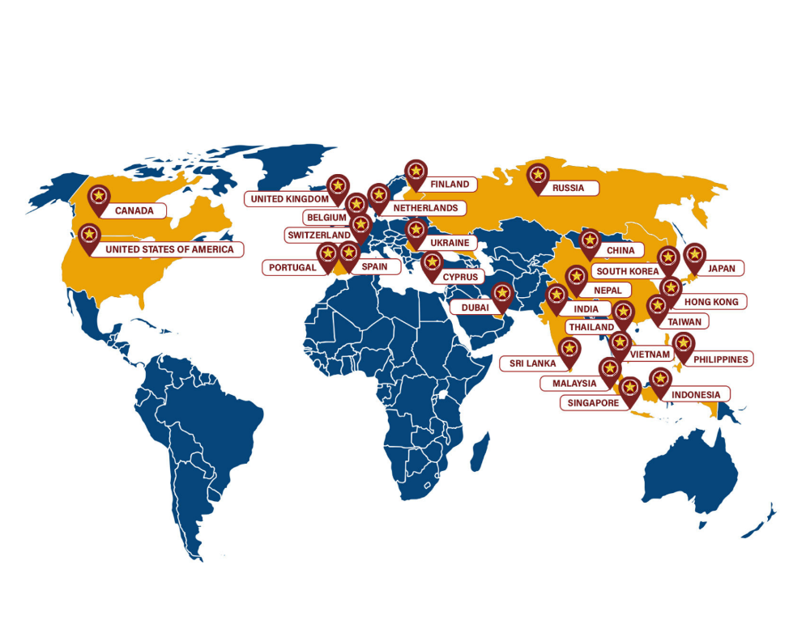

About PUP
The Polytechnic University of the Philippines (PUP) is a government educational institution governed by Republic Act Number 8292 known as the Higher Education Modernization Act of 1997, and its Implementing Rules and Regulations contained in the Commission on Higher Education Memorandum Circular No. 4, series 1997. PUP is one of the country's highly competent educational institutions. The PUP Community is composed of the Board of Regents, University Officials, Administrative and Academic Personnel, Students, various Organizations, and the Alumni.
Governance of PUP is vested upon the Board of Regents, which exercises policy-making functions to carry out the mission and programs of the University by virtue of RA 8292 granted by the Commission on Higher Education. The University is administered by an appointed President by virtue of RA 8292 and is assisted by an Executive Vice President and the Vice Presidents for Academic Affairs, Student Services, Administration, Research, Extension and Development, and Finance.
Vision
PUP: The National Polytechnic University
Mission
Ensuring inclusive and equitable quality education and promoting lifelong learning opportunities through a re-engineered polytechnic university by committing to:
provide democratized access to educational opportunities for the holistic development of individuals with global perspective
offer industry-oriented curricula that produce highly-skilled professionals with managerial and technical capabilities and a strong sense of public service for nation building
embed a culture of research and innovation
embed a culture of research and innovation
continuously develop faculty and employees with the highest level of professionalism
engage public and private institutions and other stakeholders for the attainment of social development goal
establish a strong presence and impact in the international academic community
Academic Programs
Offered through the PUP Open University System
1. Master in Information Technology
2. Master in Educational Management
3. Master in Public Administration
Undergraduate Degrees
Bachelor of Science in Information Technology (BSIT)
Bachelor of Business Technology and Livelihood Education major in Home Economics (BBTLEDHE)
Bachelor of Business Technology and Livelihood Education major in Information Communication and Technology (BTLEDICT)
Bachelor of Science in Business Administration major in Human Resource Management (BSBAHRM)
Bachelor of Science in Business Administration major in Marketing Management (BSBA-MM)
Bachelor of Science in Entrepreneurship (BSENTREP)
Bachelor of Public Administration major in Public Financial Management (BPAPFM)
Diploma in Office Management Technology Medical Office Management (DOMTMOM)
